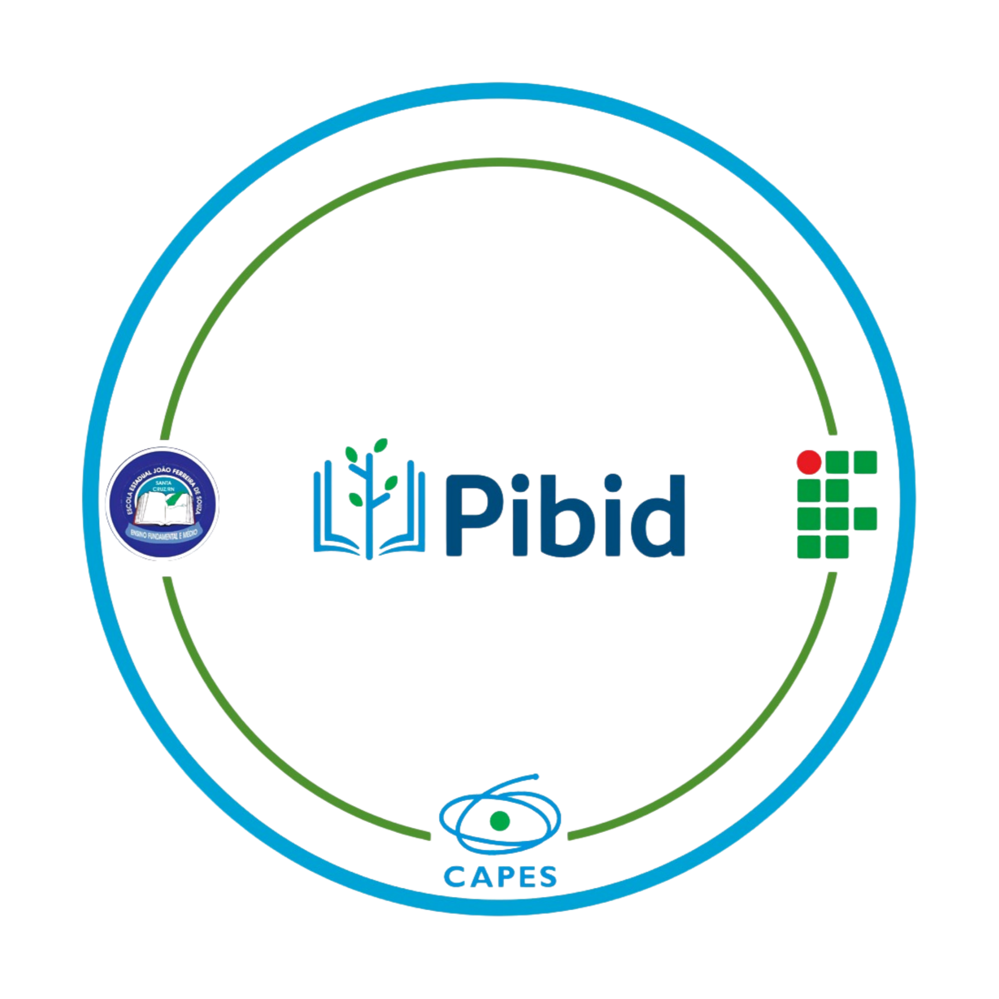

Corredores Temáticos
Curiosidades históricas (Gregos, Árabes e Século XIX). Fique atento: perguntas surpresa podem surgir sobre os conteúdos expostos!

06 DE MAIO DE 2026
IFRN Campus Santa Cruz — Santa Cruz / RN
Promovido pelos bolsistas do PIBID de Matemática e demais alunos da Licenciatura, o evento celebra o Dia da Matemática através de uma programação que integra rigor acadêmico e ludicidade.
Curiosidades históricas (Gregos, Árabes e Século XIX). Fique atento: perguntas surpresa podem surgir sobre os conteúdos expostos!
Desafios lógicos e investigativos. O objetivo é resolver os problemas propostos no menor tempo possível para pontuar.
Desafios clássicos de lógica: a travessia dos Casais e o problema do Bode e o Repolho. Planeje cada movimento com precisão!
Exibição de peças teatrais autorais produzidas e editadas pelos bolsistas do PIBID, com gincana de perguntas ao final.
Apresentação oficial da Plataforma PIBID: um ecossistema digital de videoaulas voltado à preparação estratégica para o Exame de Seleção do IF e para o ENEM.
Uma exploração visual sobre as formas complexas da natureza e as gincanas que conectam teoria e prática.
Acompanhe a pontuação em tempo real das turmas participantes.
| Posição | Turma | Pontos |
|---|---|---|
| 1º | Exemplo: 1º Ano Informática | 0 |